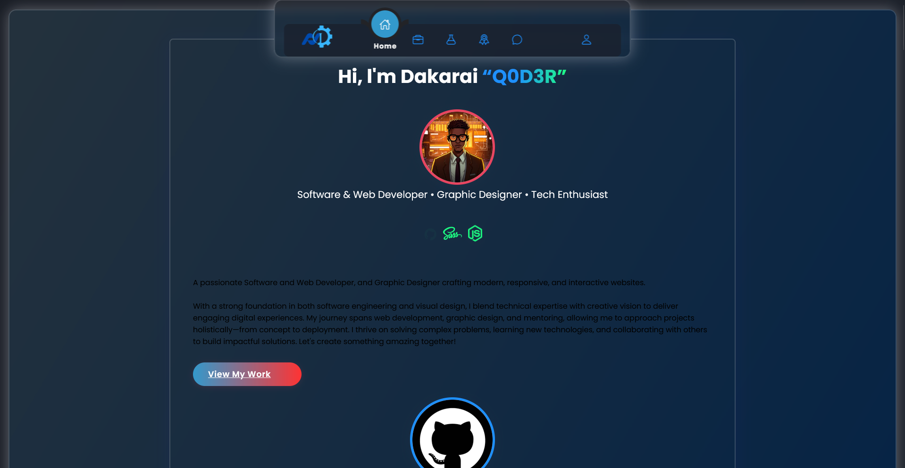

Featured Achievements & Honors
IT Infrastructure & Innovation Honor
Recognized for excellence in modernizing institutional IT systems, maintaining network security, and implementing digital workflow tools.
Certified Full Stack Web Developer
Achieved professional certification in modern web development, demonstrating expertise across HTML5, CSS3, JavaScript, Python, and SQL.
Accredited Athletics Official
Certified official serving in regional and national athletics competitions, upholding fair play, rule enforcement, and athletic standards.
Founder of Kush Systems, Inc.®
Established a digital technology venture specializing in web development, brand identity design, and custom software systems for businesses.
Open Source & Code Contributor
Contributed to open source web development projects, UI component libraries, and modular template architectures on GitHub.
STEM Leadership & Youth Mentorship
Honored for dedication to tutoring computer science, mentoring aspiring developers, and guiding youth at community centers.
Featured Projects

Developer Portfolio Website
A modern, responsive, and animated portfolio showcasing technical expertise, graphic design, and software projects using modular SCSS and partial compilation.

ChampCheck Sports Vetting
A specialized digital sports vetting and athletics compliance platform designed for school and community sports tournaments, verifying athlete eligibility and event results.

Hogar Hostel Management System
A comprehensive web application for managing hostel operations, including room allocation, student records, payment tracking, and automated notifications.

Kush System Enterprise Portal
Designed and developed a sleek corporate website for Kush System, featuring company services, technology consultation, software solutions, and a contact portal.

Roosevelt Girls' High School Website
Created a dynamic web portal for Roosevelt Girls' High School, providing announcements, event calendars, academic resources, and institutional communication tools.

Harare Children's Home Portal
A modern, compassionate community website featuring donation channels, volunteer sign-up workflows, and updates to support child welfare programs.
Future & Upcoming Projects
Beekeeping Management System
A digital platform to help beekeepers track hive health, manage inspections, record honey yields, and monitor environmental conditions for sustainable apiculture.
AI-Powered STEM Tutoring Platform
An interactive platform leveraging AI to provide personalized learning experiences and automated code mentorship for STEM students across Zimbabwe.
Smart Agriculture Dashboard
A web-based dashboard for monitoring soil moisture, weather data, and crop yields using IoT sensors and real-time analytics for local farmers.

E-Learning Content Creator
A platform for educators to create, publish, and evaluate interactive digital learning modules aligned with Zimbabwean curriculum standards.
Local Marketplace Platform
A secure online marketplace connecting local artisans and small enterprises with customers, featuring mobile payments and order tracking.

Zimbabwe Heritage Explorer
A digital interactive archive mapping Zimbabwean historical landmarks, cultural heritage, and virtual museum tours for educational preservation.
Technical Skills
Professional Experience
IT Officer
2022 – PresentManaging IT infrastructure, hardware systems, network security, and computer lab operations. Providing technical support, system diagnostics, software deployments, and staff technology training to enhance operational efficiency.
Roosevelt Girls' High SchoolFounder & Lead Web Developer
2023 – PresentDirecting web engineering, software development, and graphic design operations at Kush Systems, Inc.® Delivering custom web platforms, corporate branding solutions, and enterprise software consultations.
Kush Systems, Inc.®Full Stack Developer & Software Engineer
2022 – PresentArchitecting RESTful APIs, responsive front-end interfaces, and scalable database schemas using Python, JavaScript, PHP, MySQL, SCSS, and modern web frameworks.
Freelance & Enterprise SolutionsUI/UX & Graphic Designer
2022 – PresentDesigning modern user interfaces, wireframes, prototypes, brand logos, and marketing materials. Focused on visual hierarchy, accessibility, color harmony, and user experience.
Kush Systems, Inc.®Accredited Athletics Official & Technical Observer
2023 – PresentOfficiating inter-school and national athletics championships, enforcing rules, verifying results, and developing the ChampCheck sports vetting platform to streamline athlete compliance.
Harare Athletics Board (HAB) & NAAZSTEM & Computer Science Tutor
2017 – PresentProviding hands-on instruction in computer science fundamentals, programming logic (Python, HTML/CSS, JS), mathematics, and problem-solving skills for high school and college students.
Roosevelt Girls' High School & Private TutoringVolunteer Caregiver & Community Advocate
2022 – PresentSupporting child welfare programs, educational workshops, and recreational activities at Harare Children's Home, while developing digital portals to support volunteer and donor engagement.
Harare Children's HomeSchool Sports Coach
2016 – PresentCoaching school athletics and football teams, creating physical training routines, organizing competitions, and fostering leadership, sportsmanship, and teamwork among student athletes.
Lord Malvern School & Roosevelt Girls' High SchoolAbout Me
Hi, I'm Dakarai Mlambo (Q0D3R)
A passionate Full Stack Web Developer, IT Specialist, and UI/UX Designer based in Harare, Zimbabwe.
Founder of Kush Systems, Inc.®. I build scalable, accessible, and high-performance software solutions that bridge design and engineering.
Beyond Code & Technology
Beyond writing code and configuring network systems, I am committed to community empowerment, youth mentorship, and sports development across Zimbabwe.
Whether officiating regional track events for HAB and NAAZ, tutoring computer science students, or volunteering at the Harare Children's Home, I believe in applying tech and leadership to make a meaningful real-world impact.
- 🌍 Advocate for accessible, inclusive web experiences
- 🏃 Accredited Athletics Official (HAB & NAAZ)
- 🤝 Volunteer mentor for youth coding & care programs
- 📚 Continuous learner & open-source contributor
Get In Touch
Have a project in mind, want to collaborate on software development, UI/UX design, or IT consulting? Reach out via email, phone, or the contact form. I look forward to connecting with you!
| Email: | kushsystems@proton.me |
| Q0D3R@proton.me | |
| q0d4r@proton.me | |
| Phone: | +263 77 805 5883 |
| +263 77 807 2302 | |
| Location: | Harare, Zimbabwe |
How Can I Help?
- Custom Full-Stack Web Development
- UI/UX Design & Brand Identity
- IT Infrastructure & Network Setup
- STEM & Computer Science Tutoring
- Sports Vetting & Athletics Officiating
- Software Consultation & Partnerships